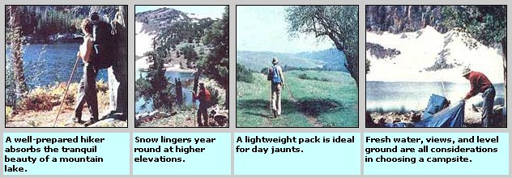

Many novice hikers purchase far too much gear for their initial outings . . . but-with just a little common sense and a lot of preparationyou can enjoy a safe and inexpensive ramble your first time out. Planning is the key to a successful backpacking expedition . . . so your adventure should begin long before you set foot in the woods.
First of all, try to read (and learn) as much about backpacking as you can . . . there are any number of excellent beginner's guides available, some of which are noted at the end of this article. Next, be sure you're familiar with the area you'll be visiting. You can get trail maps -and information on local weather and wildlife-from the park service (or other agency) that maintains your chosen trail.
You should also start a steady program of physical conditioning . . . in order to get used to walking with a heavy pack on your back. Start your series of "shakedown" trips with a short stroll and a light load . . . then gradually increase both the distance you hike and the weight you carry. When you're ready for an overnighter, make the first one an easy junket . . . stick to heavily used paths, and always travel with a friend or with a group.
Every member of the trek should keep a checklist of personal items he or she plans to pack along . . . plus a separate list of community gear, which the whole group will double-check before taking off.
The essentials in your pack should include a map, a compass, a small flashlight, a fire starter (such as a candle), matches (in a waterproof container), a pocketknife, a supply of water purification tablets, a whistle, a couple of dimes (for an emergency call from a remote phone booth!), a Space blanket (available in most sporting goods stores), some insect repellent, sun protection (such as dark glasses and sunscreen), toilet paper, and a snakebite kit.
In addition, your group's equipment repair kit should contain needles, thread, ripstop (or adhesive) tape, wire, an extra flashlight bulb and a few batteries, a pair or two of spare boot laces, nylon cord, rubber bands, and replacement pack parts. (You can stash the smaller items in empty 35mm film canisters.)
You'll also need a first aid kit, but it's easy to put together your own to cut costs. Most of the items you should carry are probably already in your home medicine chest. Be sure to pack bandages, gauze, adhesive tape, scissors, antacid, aspirin, Ace bandages, antibiotic ointment, bandaids, and moleskin patches . . . and put them all in a waterproof bag or Tupperware container.
Foremost on your equipment list, of course, will be a backpack. When you begin to shop around for gear, you'll find that there are three basic kinds of packs: the rucksack or soft daypack (used for short walks), the internalframe pack, and the outer-frame assembly. For overnight trips, either of the two types of frame packs will do fine. The more common exterior-frame model is used for heavy loads and general hiking. The inner-frame pack provides the greater stability needed for serious mountaineering expeditions.
The metal frame on a good backpack is meant to distribute the load high and close to the back-near your body's natural center of gravityenabling you to walk in a near-normal position (although you will have to lean slightly forward to balance yourself). A quality pack will also feature a padded waistbelt . . . which will allow you to support the bulk of the pack low on your hips, so that your legs -rather than your shoulders-bear the most weight.
Although many beginners don't realize it, a backpack must be fitted to its future wearer. The best way to do this is to load the pack with 25 pounds of gear (do so right in the store), hoist it onto your back, and tighten the shoulder straps and waistbelt. Are the tops of the pack's shoulder pads level with your shoulders? Does the frame curve comfortably along your spine and fit your waist? If not, try on different-sized frames until you find one that suits your own height and shape.
Most of the clothing you'll need to wear on the trail can probably be found in your own closet. (Just be sure you don't take too many garments: One set of clotheswith an extra shirt and pair of socks-is really all you'll require for a two-day excursion.) If you want to avoid buying an expensive down parka for winter backpacking, simply dress in layers . . . from Tshirt to wool shirt, sweater, and lightweight jacket. Such an outfit will keep you warm and allow you to peel off individual layers as you build up body heat.
For rainy weather hiking, carry a poncho. The vinyl kind-which can be had for under $10-is less durable than the more expensive nylon variety, but even the cut-rate rain guards will last awhile. And don't forget to carry a bandanna . . . it makes a great all-purpose dishcloth, napkin, face towel, or cooling compress.
The final-and most important-item in your backpacking wardrobe will be a good, sturdy pair of hiking boots. Don't skimp on your footgear . . . or your lower extremities will pay the bill later, when you're actually out in the woods! A lightweight shoe (available for under $75) will serve for short weekend jaunts, but a medium-weight boot will be better for longer hikes. Be careful, though, that you don't buy a heavier boot than you need . . . as the old maxim states, "A pound on your feet is worth five on your back."
The most critical factor in hiking comfort, of course, is the fit of your boots. When trying on footgear, be sure to have on socks of the same weight as those you'll be wearing on the trail (a good choice is a thin nylon or silk "liner" inside a heavy wool sock).
To accurately check the fit of your tobepurchased footwear, stand up in the unlaced pair of boots and push your toes as far forward as possible . . . then slide your index finger down behind your heel.
If you can touch the bottom of the shoe with your finger, you've probably got a good fit. Then, when the boot is laced up, the ball of your foot should feel snug and the heel should stay securely in place without slipping.
Once you've selected your footwear, break it in gradually ... just stroll around the house at first (many stores will allow you to return badly fitting boots if they haven't been worn outdoors), and then ease into longer tramps. Even after your shoes are broken in, you may still develop blisters on the trail. If you feel an irritation spot forming as you walk, stop immediately and apply a moleskin patch. It's best, also, to take off your boots occasionally and let your hot, sweaty feet cool down . . . then dust on foot powder and change to dry socks. (You can hang the damp ones on the outside of your pack to air-dry.)
When it comes to satisfying the appetite that you're bound to work up on a brisk hike, there are several alternatives to the expensive, freezedried goods that most backpackers tote. You'll find that everyday grocery store items can form the bulk of your trail menus . . . especially simple breakfasts and lunches. Since you're looking for victuals that are lightweight, compact, and nonperishable (not to mention easy to prepare!), you might want to investigate dehydrated and "instant" foods.
Dried goodies, such as fish and mushrooms, are available from Oriental food markets or delis . . . while most health food stores offer a variety of grains, beans, nuts, granola bars, and dried fruits. To keep up your stamina while walking, take along plenty of energy snacks to munch as you go. (The everpopular "GORP" is simply a make-it-yourself mixture of peanuts, sunflower seeds, granola, raisins, and dates . . . plus whatever else you'd like to add.)
Before you leave, be sure to eliminate all unnecessary wrappers . . . and then repackage your food in plastic Ziploctype bags (making sure to double-bag any powders or oily items). And, since free-for-the-totin' firewood can often be scarce along the trail, pack a small butane stove for wilderness cooking.
Finally, don't forget to take some drinking water with you. It's not always possible to locate a potable source when you're thirsty, so a canteen or other lightweight container (which should be refilled at every opportunity) is a necessity . . . hiking is strenuous exercise that uses up body fluids rapidly.
After supper, a weary hiker's thoughts turn automatically to bed . . . so be sure you'll have a warm, dry place to sleep. The lightest and least expensive shelter is a tube tent (or even a simple groundsheet with a roof made from plastic, nylon tarp, or a poncho). Unfortunately, insects seem to zero in on such makeshift retreats . . . so you might want to pitch a singlewalled "summer" tent or a "mosquito" canopy.
If you want even more protection, you can choose a double-walled tent that keeps out rain, wind, and pesky bugs!
The inner fabric of such shelters will "breathe," allowing air and moisture to pass through and thus reducing the problem of condensation inside the tent. The outer layer consists of a rainfly: a waterproof covering that protects the canopy, but leaves ample space for ventilation.
For sleeping under the stars, select a lightweight, mummy-shaped bag. A "sleeper" of this design will keep you warmer than will a rectangular model, since it contains less space for your body to heat. In the debate as to whether down or synthetic filling is best, you'll have to let your personal preference be your guide in choosing between the extra warmth (at least when it's dry!) of down or the lesser expense involved in buying a bag made of lightweight synthetic material. Underneath either kind of bedroll, though, you'll need ground insulation (in the form of alight foam pad or an air mattress) and a ground cover (such as a plastic tarp or an old poncho) if you sleep outside.
Although you'll have to gather all the abovelisted essentials before you make your first track in the wilderness, there are alternatives to sinking a lot of bucks into a sport that you haven't even tried yet (and aren't sure you'll want to continue! ). Before you decide to buy, then, check around the house for any usable articles you might have . . . for instance, a plastic quart jug will easily substitute for a canteen. You can also rent equipment from many outdoor shops (this is a great idea for beginners, since it allows you to "field test" a variety of brands and models) . . . or even borrow gear from your hiking friends.
When shopping, try to locate factory "seconds" . . . many such new articleswhich have minor defects or irregularities that really cut down their pricesare nevertheless perfectly serviceable. Look in thrift shops for used camping gear, too. . . but check secondhand items carefully for signs of wear and tear. And don't miss the end-of-the-season sales on rental equipment at mountain sports shops. (Or, a group of potential backpackers-pooling their orders-may be able to obtain a quantity discount.)
If you're handy with a needle, you might even want to go the economy, make-it-yourself route. Down jackets, vests, sleeping bags, and even tents are all available in kits with easy-tofollow instructions.
So either get stitchin' or get shoppin' . . . and then get hikin'!
EDITOR'S NOTE: Want to learn more about trail foods, equipment, and wilderness survival? Look into these volumes . . . they can be found in many good bookstores, or you can order there-for their listed prices plus 95 cents ($2.00 for three or more items) shipping and handling-from Mother's Bookshelf, P.O. Box 70, Hendersonville, North Carolina 28791: How to Make Your Own Camping & Hiking Gear by S. Blackwell Duncan, $7.95 . . . Simple Foods for the Pack by Vikki Kinmont anal Claudia Axcell, $5.95 . . . How to Stay Alive in the Woods by Bradford Angier, $1.95 . . . The Outdoor Idea Book edited by June Fleming, $6.50.
|
 |
|
|